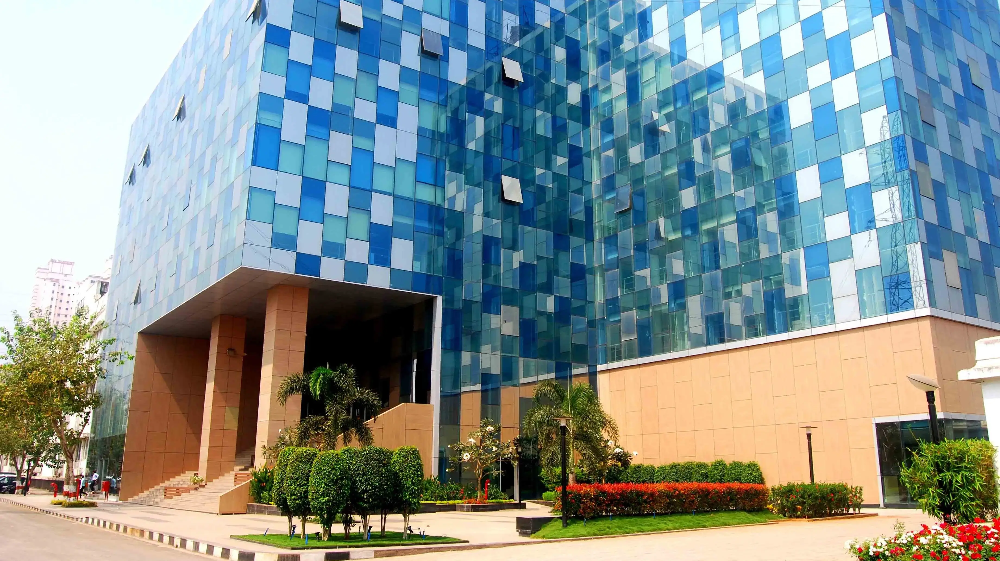

International conference on
Advances of Electronic And Computer Technology
(ICAECT-2022)
07th & 08th APRIL 2022
Submit Paper
Schedule

Schedule Day 1 : 7th April 2022
9:30am to 10:00am
Inauguration of Conference
10:00am to 11:00am
Keynote Speech
11:00am to 12:00pm
Guest of Honour Speech
12:00pm to 01:15pm
Lunch Break
01:15pm to 02:45pm
Session 1 and Session 2
02:00pm to 03:00pm
Tea Break/Poster Presentation
03:00pm to 04:30pm
Session 3 and Session 4
Schedule Day 2 : 8th April 2022
9:30am to 10:30am
Tutorial Session
10:30am to 11:00am
Tea Break/Poster Presentation
11:00am to 12:30pm
Session 5 and Session 6
12:30pm to 01:30pm
Lunch Break
01:30pm to 03:00pm
Session 7 and Session 8
03:00pm to 03:15pm
Tea/Coffee Break
03:15pm to 04:30pm
Valedictory
Details

Important Dates
Call for Paper
06 January 2022
Acceptance Deadline(Extended)
20 March 2022
Registration
20 March 2022
Submission of Camera Ready Paper
28 March 2022
Conference Dates
7 & 8 April 2022
Mode of Conduction
Online
Platform
MS-Teams
Academic Participant
Indian Author : ₹2,500
Foreign Author : $50
Participant : ₹500
Industry Participant
Indian Author : ₹3,000
Foreign Author : $100
Participant : ₹1,000
About the Institute
Vidyalankar Institute of Technology is an Engineering Degree and Management College, approved by AICTE and affiliated to the University of Mumbai. Incepted in 1999 and awarded an 'A' Grade by the Govt. of Maharashtra, with three departments of the college are NBA accredited and the institute is NAAC accredited with A+ Grade, the Institute generates quality technocrats with solid academic records and offers excellent placement opportunities. “Work is worship” is the guiding principle for everyone at Vidyalankar. Through our passion for work we incessantly seek progress and believe that individual and collective expertise blossom in an environment of symbiosis. Inspired by the philosophy of “Student Delight”, every year VIT welcomes and nurtures around 800 engineering and management talents at the undergraduate, postgraduate and doctorate levels and makes them industry-ready.
Tracks
- Industry 4.0
- Virtual Reality and Artificial Intelligence
- Power Systems and Automation
- Communication and Network security

List of Journey
- Gradiva Review Journal- UGC Care List Group 2 – Scopus Active Journal
- International Journal of Engineering and Management Research-The journal is Abstracted/Indexed in: CrossRef, SSRN(Elsevier), Scilit, Google Scholar, CNKI-Scholar, Publons, Microsoft Academic, Open J-Gate, Research Bib, Mendely, etc.
- Journal of Emerging Technologies and Innovative Research- UGC Care List
- Web-of-science indexed journal
About Department of Electronics Engineering
Electronics Engineering is an ever evolving field that has benefitted the progress of man and society. Electronic gadgets have become an integral part of our lifestyle. In fact, we begin our day with some electronic gadget and end the day with it. In today’s fast-changing world, a new generation of electronics engineers needs to be developed to provide environment friendly solutions to the challenges faced due to limited resources. The department has a dedicated faculty to develop all round electronics engineering graduates with highly professional and ethical values. The department has well equipped laboratories where students can perform experiments and work on real life problems.
Objective

Vidyalankar Institute of Technology aims to move a step further in its teaching endeavours and head towards research and promote interdisciplinary collaborations. The International Conference on Advances of Electronics and Computer Technology (ICAECT-2022) is to be held on 07th and 08th April, 2022 is intended to bring together researchers and practitioners, from the academy and industry.This conference shall be organized with parallel multi- track programmes, which will introduce participants to advances of electronics and computer technology. It will focus on the applications for the 'compliance to industry 4.0.'
For More Information
📞 Contact
Prof. Rakshak Sood - 9004649055
Prof. Anuradha Joshi - 8689913579
Prof. Nisy Mathew - 9167007871
Click Here
Keynote Speakers

Bounceur Ahcène
Associate Professor of Computer Science at the University of Brest (UBO)
Dr Ahcène Bounceur is an associate professor of Computer Science at the University of Brest (UBO). He is a member of the Lab- STICC Laboratory,His current research activities are focused on the following aspects: Digital Twin tools for cybersecurity of smart critical infrastructures; Datascience (Datamining and Multidimensional Statistical modelling); Simulation Tools for WSN and IoT networks dedicated to Smart-cities; Pseudo-polygons for security and cybersecurity. He is the co-head of the Master Degree “Software for Embedded Systems" of the computer science department and the Head of the computer science section of the Continuous Training department of the UBO.

Subhas Mukhopadhyay
Professor of Mechanical/Electronics Engineering with the School of Engineering, Macquarie University
Dr. Subhas Chandra Mukhopadhyay (M’97, SM’02, F’11) currently is working as a Professor of Mechanical/Electronics Engineering with the School of Engineering, Macquarie University, NSW 2109, Australia. He is the Discipline Leader of the Mechatronics Engineering Programme. He is also the Director of International Engagement for the School of Engineering. His fields of interest include Sensors and Sensing Technology, Instrumentation, Wireless sensor networks, Internet of Things, Mechatronics and Robotics etc. He has authored/co-authored 10 books, over 400 papers in different international journals, conferences and book chapter. He has edited eighteen conference proceedings. He has also edited thirty two special issues of international journals as guest editor and thirty six books.
Patrons
Ms. Rashmi Deshpande
Chairperson, VDT
Mr. Vishwas Deshpande
Trustee, VDT
Mr. Milind Tadvalkar
Director, VDT
Dr. Sunil Patekar
Principal, VIT
Prof. Varsha Bhosale
Vice Principal, VIT
Dr. Saurabh Mehta
CAO, VIT
Dr. Amit Oak
COO, VIT
Contributors
Dr. Arun Chavan
Program Chair
Dr. Sheetal Mapare
Program Co-Chair
Dr. Nayana Mahajan
Program Co-Chair
Dr. Sangeeta Joshi
Technical Committee
Prof. Shrikant Velankar
Technical Committee
Dr. Girish Gidaye
Technical Committee
Prof. Pravin Annadate
Publication Chair
Prof. Rakshak Sood
Publication Chair
Prof. Anuradha Joshi
Publication Chair
Advisory Board
Dr. S.Mukhopadhay
Macquarie University, Australia
Prof. Mondher Frikha
Director, Sfax, Tunisia
Dr. Faruk Kazi
Dean R&D, VJTI, Mumbai
Dr. Milind Joshi
SAMEER IIT, Mumbai
Dr. S.N. Mali
Principal, D Y Patil, Pune
Dr. Atul Phadke
Professor, COEP, Pune
Dr. Ravishankar Dudhe
Manipal University, Dubai
Dr. Sadanand Deshpande
Dean R&D, PIET, Nagpur
Dr. S. G. Kadwane
HOD, YCCE, Nagpur
Dr. R. M. Moharil
Professor, YCCE, Nagpur